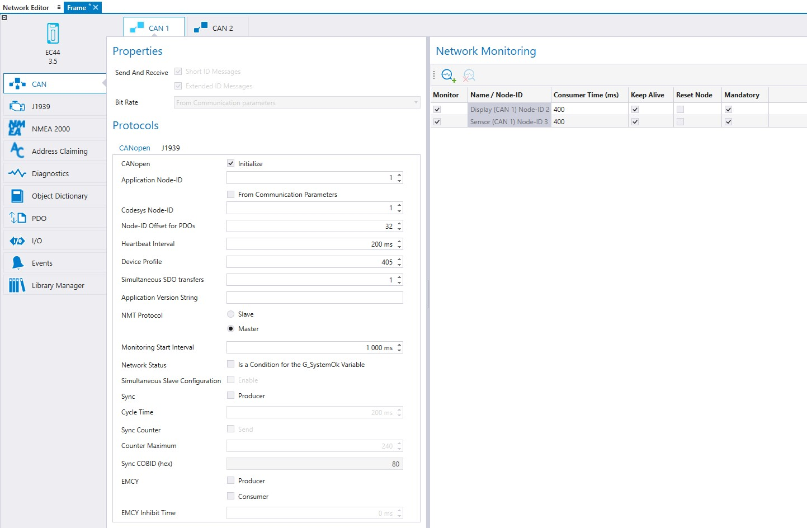

CAN bus configurations and CANopen initialization are done on the CAN tab. The CAN tab also includes Network Monitoring, where the device monitoring settings can be done. For more information about Network Monitoring, see Monitoring CANopen Devices.
|
|
To configure a generic device, see section Configuring CANopen slave Devices. This section describes CAN configurations for all the other device types. |

First select the CAN channel from the tabs. The configurable fields of each CAN are described in the following table:
|
Property |
Description |
|
|
Send and Receive |
Short ID Messages
Extended ID Messages |
If the Short ID Messages option is selected, the CAN bus uses short ID messages (11 bit message IDs). Short ID messages should be used, when using for example CANopen protocol.
If the Extended ID Messages option is selected, the CAN bus uses extended ID messages (29 bit message IDs). Extended ID messages should be used, when using for example ISOBUS or SAEJ1939 protocol.
If both Short and Extended ID Messages are selected, the CAN bus uses short AND extended ID messages. Both short and extended ID messages should be used, when using for example CANopen device that receives SAEJ1939 messages.
This setting is disabled for CODESYS 3.5 devices, since they always receive both Short and Extended ID messages. |
|
Bit rate
|
|
Select the bit rate from the drop-down list. When From Communication Parameters is selected, the bit rate is read from the device's communication parameters (non-volatile memory, index 2150h). This enables the bit rate to be changed via CAN.
The bit rate is always the same for all devices in the same network. If the device is connected to a network, this field will be read-only and the bit rate can be defined in Network properties. |
|
Buffering |
Enabled |
This setting is visible only for 3000 series devices. Select to initialize 3000CANVXD library's RX message buffering for the current CAN channel. Enable buffering when using J1939 and/or ISOBUS. For more information, see Epec Programming and Libraries manual, section Libraries > 3000 Specific > 3000CANVXD. |
|
CANopen |
Initialize |
Select Initialize to use CANopen protocol. CANopen protocol initialization is required when, for example, Object Dictionary, PDO messages, Events and/or Network Monitoring are used. |
|
Application Node-ID |
|
Shows the Node-ID for the CAN Bus. Possible values are 1...127. Select a static value or From Communication Parameters check box.
The selection From Communication Parameters means that the node-ID is read from the device’s communication parameters. This enables the node-ID to be changed via CAN. If the From Communication Parameters is selected, the node-ID should be set to correct default value since it is used for PDO COB-IDs. To enable the cable detection in devices, select From Communication Parameters.
|
|
Node-ID Offset for PDOs |
|
Set the Node-ID Offset for PDOs for calculating PDO COB-ID's dynamically. The offset is needed, if there are more than four transmitted PDOs. The first four values can be calculated based on the Application Node-ID. The next COB-ID values need to be calculated based on the Application Node-ID and the offset as follows:
|
|
Heartbeat Interval (ms) |
|
The time between two consecutive heartbeat messages. A heartbeat is a periodically sent message that is used for monitoring the nodes in the network. Possible values for the heartbeat are 0...65535. If the heartbeat interval is 0, the message will not be sent. |
|
Device profile |
|
Type in the used device profile, this information can be requested from the device by CANopen index 1000h value. |
|
Application Version String
|
|
Fill in the application version. The version is written to index 2130h (Application version number). |
|
Simultaneous SDO Transfers |
|
Defines how many node IDs can be communicated simultaneously with SDO client messages. For more information, refer to Epec Programming and Libraries manual > Libraries > Common Libraries for Control Units > CANopen (C3.5 V 4). |
|
NMT Protocol |
slave / Master |
NMT Master can control the communication state of the other nodes with NMT messages. The NMT Master monitors the NMT states and makes actions according to the NMT states depending on configurations made to Consumer Time, Keep Alive, Reset Node and Mandatory.
NMT slave can monitor NMT states of other network devices, but cannot command NMT state transitions to them. The NMT slave device starts up in pre-operational state and waits for NMT Masters command to change the NMT state to operational. |
|
Monitoring Start Interval |
|
Monitoring Start Interval is enabled only when NMT Master is selected. The Monitoring Start Interval defines the time that elapses between each restart of the device. Also, Keep Alive must be selected in the table for Monitoring Start Interval to work. |
|
Network Status |
Is a Condition for G_SystemOk Variable |
Selecting this makes the CAN bus status a condition for the global variable G_SystemOk state. |
|
Simultaneous slave Configurations |
|
To configure multiple slave devices by the master simultaneously, select Simultaneous slave configurations. This check box is enabled only when configuring a master device that has multipslavesponder devices (all the devices must be in the same network and configured by the same slave device).
|
|
Sync |
Producer |
Defines that the device is a Sync producer. Only one device can be defined as a Sync Producer in the Network. Note that Sync Producer functionality is supported only with CODESYS 3.5 devices (CANopen library 4.0.2.2 or newer). |
|
Cycle Time |
|
Defines the time (ms) that elapses between SYNC messages. |
|
Sync Counter |
|
Defines that a Sync message contains a Sync Counter value. |
|
Counter Maximum |
|
Defines the Sync Counter maximum value. |
|
Sync COBID (hex) |
Defines the COB-ID for the SYNC Producer. The default value is 80. |
|
|
EMCY |
Producer |
Defines that the device is an EMCY producer. Note that the EMCY functionality (Producer/Consumer) is supported only with CODESYS 3.5 devices (CANopen library 4.0.2.4 or newer). |
|
|
Consumer |
Defines that the device is a EMCY consumer. The EMCY consumer receives EMCY messages from all other devices defined in network. |
|
EMCY Inhibit Time |
|
Defines the inhibit time forthe EMCY message. The default value is 0. |
If an S series product unit is selected, CANopen Safety tab is visible.
See also,
Epec Oy reserves all rights for improvements without prior notice.
Source file 7_9_2_CAN.htm
Last updated 25-Jun-2025